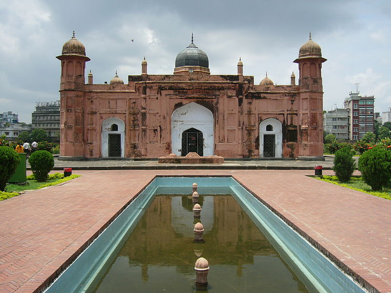
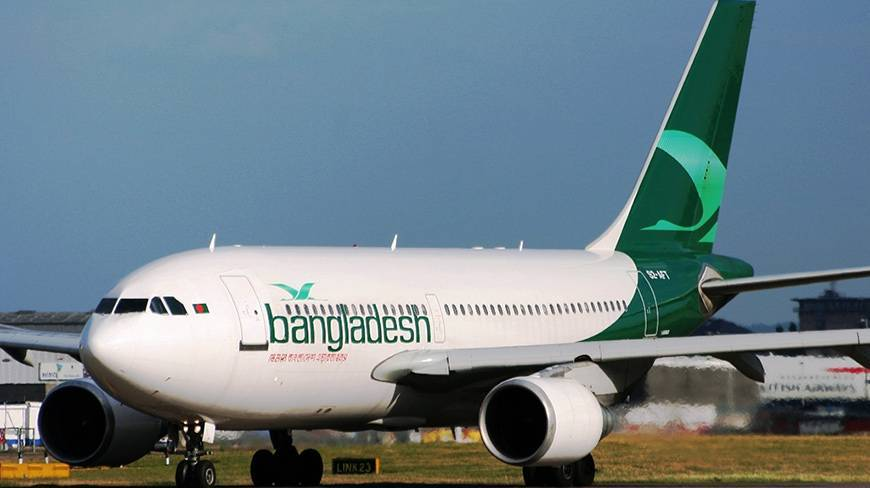
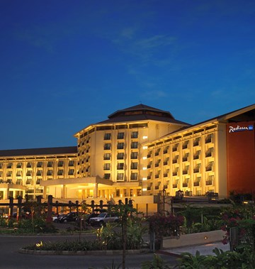

A heady blend of ancient and modern on almost every corner, friendly locals, and a wealth of historical monuments - there are lots of great reasons to plan your trip to Dhaka.
There are flights to Hazrat Shahjalal International Airport (DAC) from most continents. The airport is 13 miles from central Dhaka and travelers can reach the city easily by train from Airport Railway Station directly opposite the terminal, and you can also take a tuk-tuk into town for around ৳400 ($4.81 USD).
Average temperatures in Dhaka vary somewhat. Considering humidity, temperatures feel hot for about half of the year and otherwise nice with a fair chance of precipitation about half of the year. The area is less temperate than some — in the 33rd percentile for pleasant weather — compared to tourist destinations worldwide. Weeks with ideal weather are listed above. If you’re looking for the very warmest time to visit Dhaka, the hottest months are June, May, and then April.
The best times to visit Dhaka for ideal weather are: November 12th to March 4th. This is based on the average temperature and humidity from NOAA (the National Oceanic and Atmospheric Administration).
Find Out MoreDhaka is a thriving business destination so you'll find lots of luxury hotels like the Radisson Blu Dhaka Water Garden and the Westin Dhaka. Mid-range hotels include Rigs Inn.
Popular Neighborhoods in Dhaka Old Dhaka - the 17th-century old town is where you'll find Tara Masjid (Star Mosque), Lalbagh Fort, and the Ahsan Manzil.
Motijheel - this is the city's financial and commercial hub. Attractions include Pir Jongi Mazar and the Ramakrishna Mission.
Gulshan - an upscale residential neighborhood to the south of the city center, Gulshan boasts some of Dhaka's best restaurants.
Find Out More